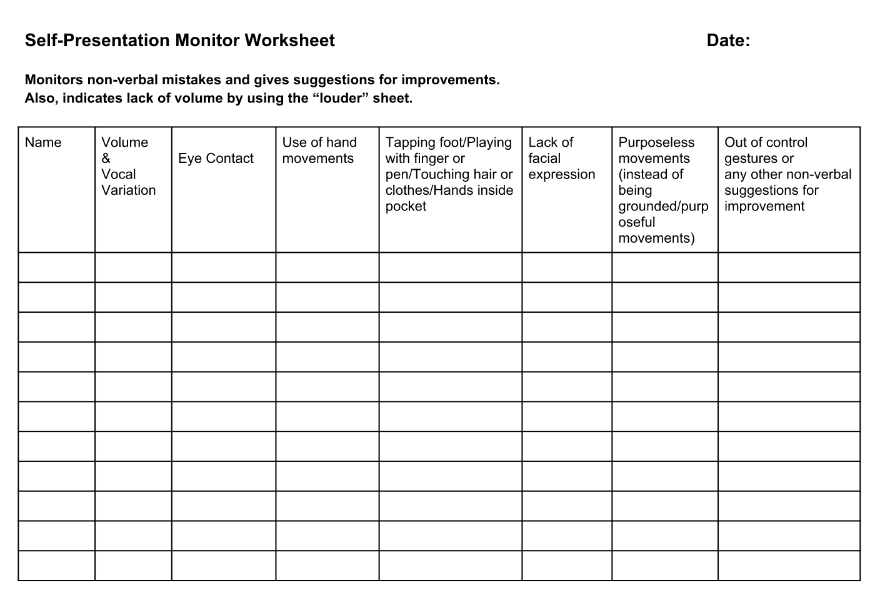

<!-- Main -->
	<div id="main" class="wrapper style1">
		<div class="container">
			<section>
				<p align="center"></p>
				<div class="10u -1u">
					<header class="major">
						<!-- <h2>Blog</h2> -->
						<!-- <span class="byline">Integer sit amet pede vel arcu aliquet pretium</span> -->
					</header>
					<h2>Summary of the Role</h2>
					<ul>
						<li>Monitors, indicates and reports vocal variation. </li>
						<li>Looks for non-verbal mistakes:Tapping foot, knuckling fingers, twirling or touching hair, too many or too few hand gestures,clicking pen, hand in jeans or trouser pocket etc. </li>
						<li>Lack of facial expression. </li>
						<li>Out of control gestures. </li>
						<li>Limp handshake. </li>
					</ul>
</ul><br>
<h2>Evaluation form</h2>
Download: <a href="self.pdf"></a>
	
	<br>
	<h2>Videos</h2>
	<p align="center">
		<iframe height="500"
		src="https://www.youtube.com/embed/H1gSb3YOdAY">
		</iframe>
	</p>

	<h2>More Resources:</h2></a>
	<ul>
		<li><a href="http://sixminutes.dlugan.com/6-communication-barriers/">Common Communication Barriers</a></li>
<!-- <a href="https://www.toastmasters.org/Membership/Club-Meeting-Roles/Ah-Counter"><h2>Resource from Toastmasters International</h2></a> -->


				</div>
			</section>
		</div>
	</div>
